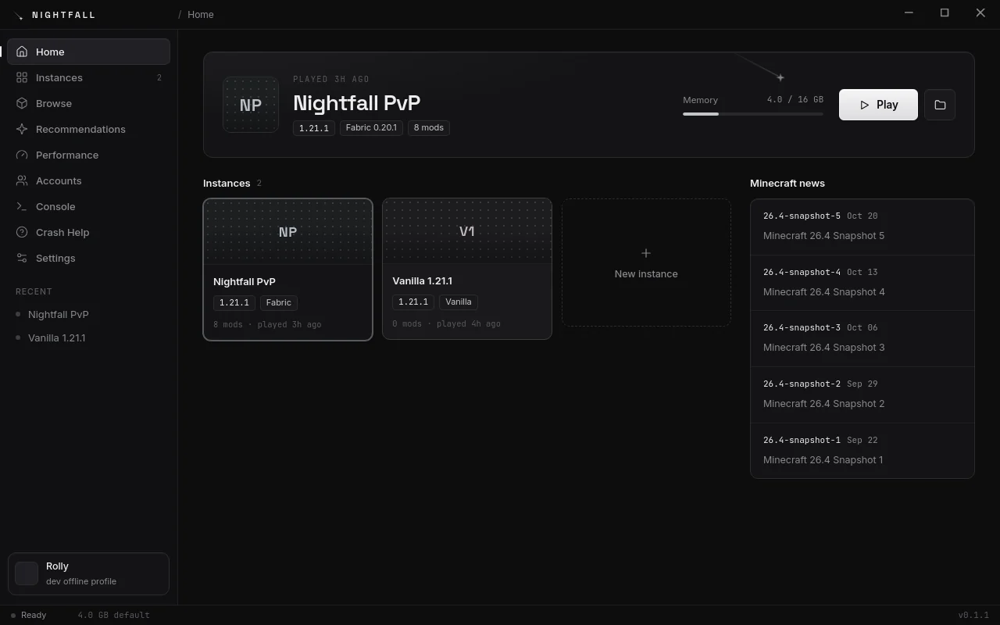
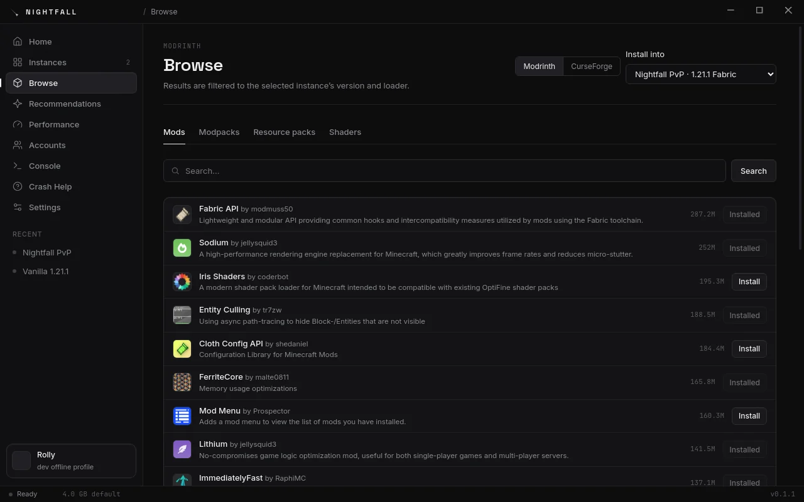
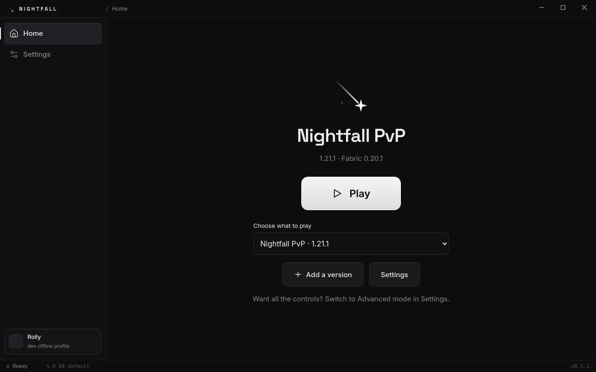
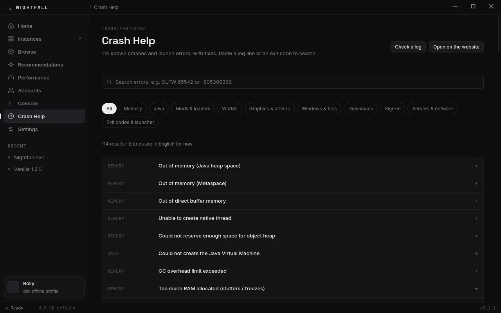
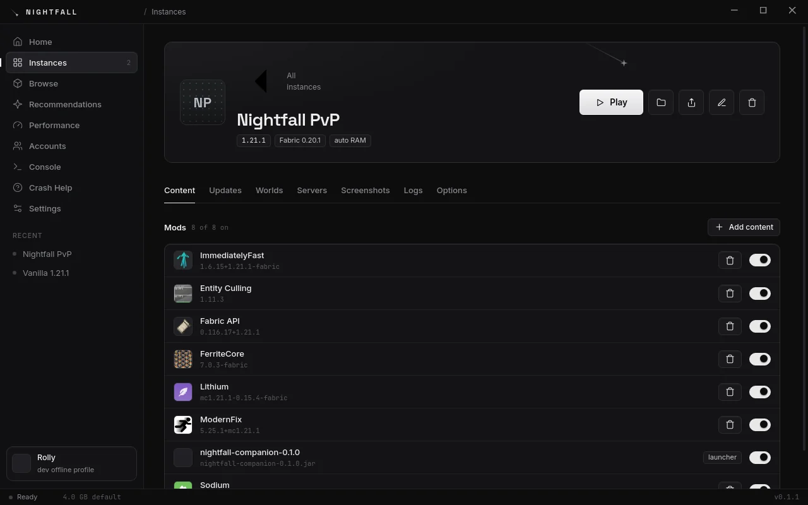
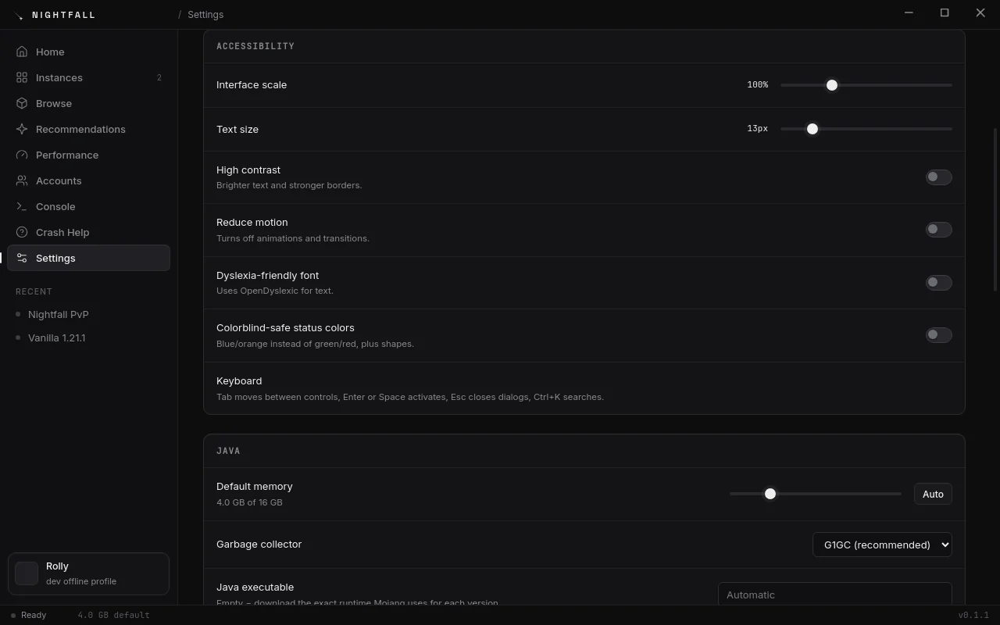

Play Minecraft.
Nothing in the way.
Nightfall is a calm, fast launcher for Minecraft: Java Edition. One click for better FPS, mods from Modrinth, and a mod switch right inside the game.

Everything you need, nothing you don't.
Built for players who want to press Play and have it just work, with the controls there when you want them.
One-click performance
The Performance profile installs Sodium, Lithium, FerriteCore, EntityCulling, ImmediatelyFast and ModernFix, matched to your version.
Modrinth built in
Search mods, modpacks, shaders and resource packs. Dependencies install themselves, updates take one click, and .mrpack files import.
Mod toggle in the game
Press the N button on the title screen, switch mods on or off, then Apply & Restart. You're back in a few seconds.
Updates itself
Install once. New versions download quietly in the background and install when you close the launcher.
Crash help that explains0.2
Over 100 known crashes, each with the cause in plain words and fixes in order, plus one-click actions like more RAM or the right Java.
Simple mode0.2
One big Play button and nothing else, for anyone who doesn't want menus. Advanced mode is one switch away.
Shared game settings0.2
Keybinds, video and audio settings follow you across every instance and Minecraft version.
Vanilla, Fabric and more
Any release or snapshot, vanilla or Fabric, with the exact Java Mojang ships. Quilt, plus Forge and NeoForge (experimental), come in 0.2.
Accessible, in your language0.2
High contrast, reduced motion, a dyslexia-friendly font, UI scaling and full keyboard navigation, in 23 languages.
Features marked 0.2 are finished and arrive in the next update. The screenshots show 0.2.
Quiet by design.
Black, gray and white, with the falling star. Here's Nightfall 0.2.





How Nightfall compares.
An honest look at the launchers people switch from. We only list what Nightfall really does.
| Feature | Nightfall | Official | Prism | Modrinth App | CurseForge | ATLauncher | GDLauncher |
|---|---|---|---|---|---|---|---|
| Microsoft sign-in | Yes* | Yes | Yes | Yes | Yes | Yes | Yes |
| Separate instances | Yes | Partial | Yes | Yes | Yes | Yes | Yes |
| Fabric | Yes | — | Yes | Yes | Yes | Yes | Yes |
| Forge / NeoForge | experimental0.2 | — | Yes | Yes | Yes | Yes | Yes |
| Automatic Java per version | Yes | Yes | Yes | Yes | Yes | Yes | Yes |
| Modrinth mods with dependencies | Yes | — | Yes | Yes | — | Partial | Yes |
| Modrinth modpacks (.mrpack) | Yes | — | Yes | Yes | — | Partial | Yes |
| One-click performance mods | Yes | — | — | — | — | — | — |
| Toggle mods from inside the game | Yes | — | — | — | — | — | — |
| Crash viewer that explains the crash | Yes0.2 | — | Partial | Partial | — | — | Partial |
| Shared settings across instances | Yes0.2 | Partial | — | — | — | — | — |
| Simple / Advanced mode | Yes0.2 | Yes | — | — | — | — | — |
| Launcher updates itself | Yes | Yes | Yes | Yes | Yes | Yes | Yes |
| No ads | Yes | Yes | Yes | — | — | Yes | Partial |
| Bedrock Edition | — | Yes | — | — | — | — | — |
* Other launchers' columns are our best reading of their public feature pages (October 2026) and may be out of date. Corrections are welcome on Discord. 0.2 = in the next Nightfall update. Sign-in needs Mojang's approval of Nightfall first.
Ready when you are.
Download Nightfall, or come say hi on Discord. Bug reports, ideas and screenshots are all welcome.